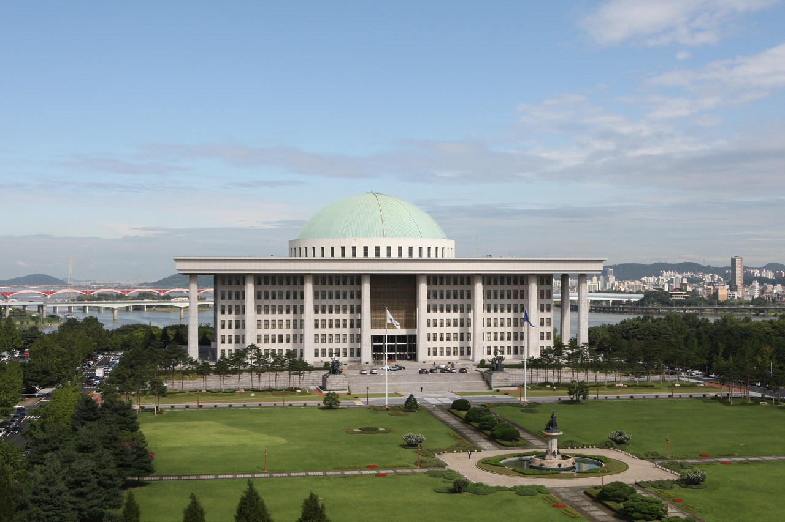
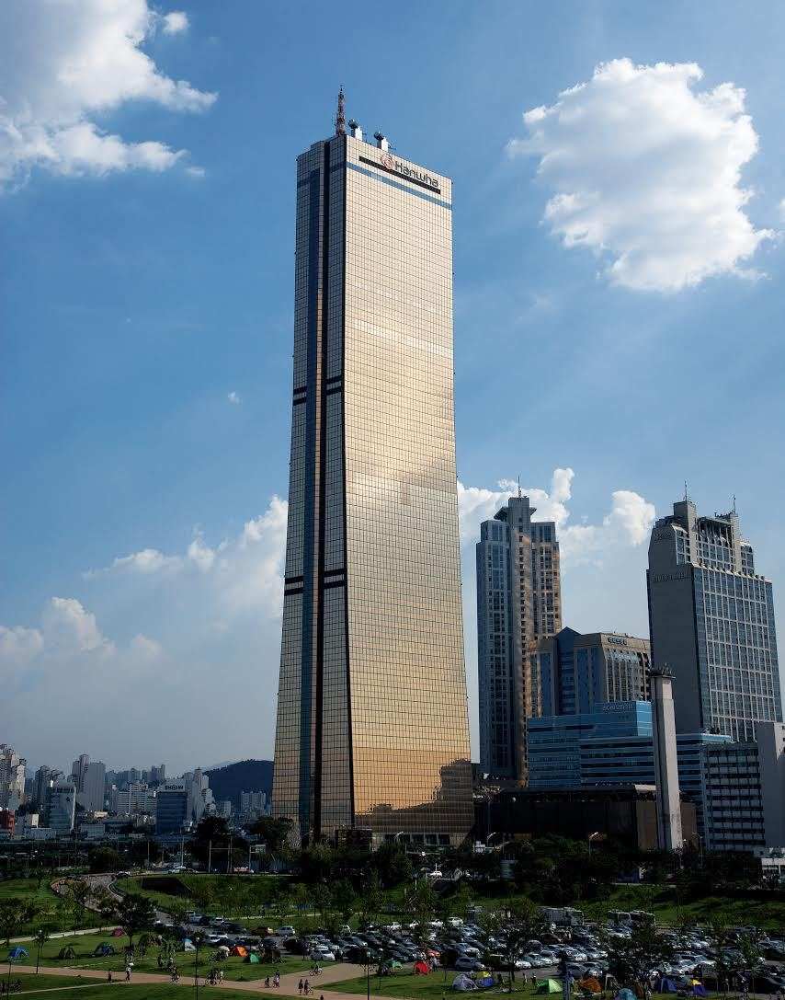
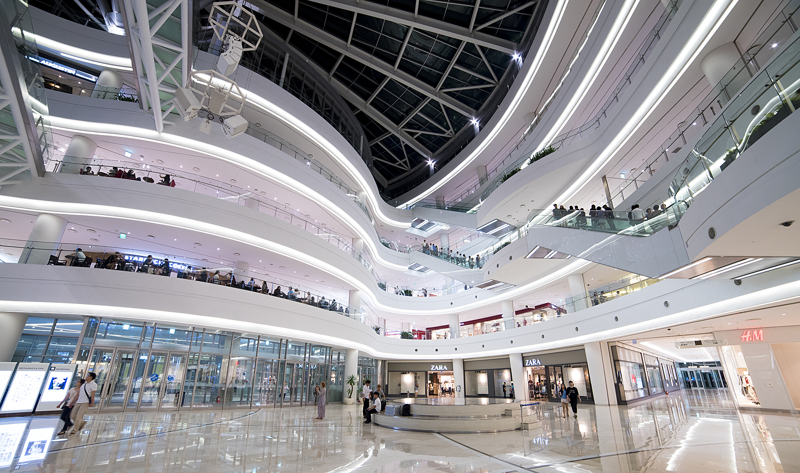

Home 우리 동네
영등포구
제가 사는 곳은 영등포구입니다. 영등포구의 랜드마크를 소개합니다.
국회의사당

대한민국 국회가 활동하는 건물로 주소는 서울특별시 영등포구 의사당대로 1입니다.
입법부의 핵심 장소이며 국회 본회의와 임시회의가 열리는 곳입니다.
여의도의 총 면적 80만평 중 국회의사당 부지는 10만평으로 동양의 단일 의사당 건물 중에서는 가장 큽니다.
장차 통일이 되어 국회의원 정원이 늘어날 경우에 대비해, 국회 본회의장은 좌석이 이동식으로 되어 있어 최대 400석까지 확장할 수 있다고 합니다.
국회의사당 상단의 돔은 한국 애니메이션에서 '태권 브이'가 나오는 곳으로도 유명합니다.
63빌딩

여의도의 상징이자 2003년까지 국내에서 가장 높았던 건물로 서울특별시 영등포구 63로 50에 위치하고 있습니다.
높이는 249m, 63층이며 건물의 외벽이 금색으로 되어있는것이 특징입니다.
건물 내에는 전망대와 수족관 등이 있어 관광객들이 많이 찾는 곳입니다.
타임스퀘어

강남구에 코엑스가 있다면 영등포구엔 타임스퀘어가 있습니다.
서울특별시 영등포구 영중로 15에 자리잡고 있는 복합 쇼핑몰로, CGV, 이마트, 교보문고, VIPS 등의 주요 시설들이 모여있어 사람들이 많이 찾는 곳입니다. 더군다나 CGV 영등포점에는 국내 최대 크기의 스크린이 있어 많은 사람들이 영화를 보러 갑니다.
맛있는 음식점도 많아서 배고플 때 가면 좋습니다.